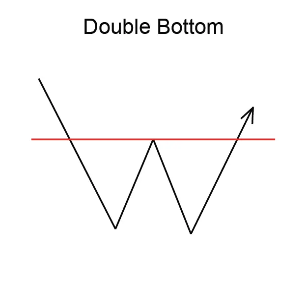
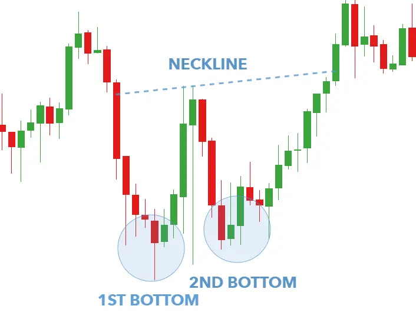

डबल बॉटम पैटर्न एक रिवर्सल चार्ट पैटर्न है जो दो समान निम्नतम स्तरों के द्वारा उत्पन्न हुई होती है,
और इसे एक प्रतिबंध स्तर द्वारा जोड़ा गया होता है। दूसरा निचला स्तर पहले निचले स्तर से अधिक होना चाहिए।
डबल बॉटम पैटर्न एक उत्थान का संकेत देता है, और ट्रेडर्स अक्सर इसे ट्रेड करने के अवसर के रूप में इस्तेमाल करते हैं।
इसे ट्रेड करने के लिए, ट्रेडर्स आम तौर पर दूसरे निचले स्तर पर एक 'ब्रेकवे' की खोज करते हैं।
डबल बॉटम पैटर्न एक विश्वसनीय रिवर्सल पैटर्न नहीं है, लेकिन यह एक संभावित उत्थान का संकेत देता है।
ट्रेडर्स अक्सर इसे ट्रेड करने के अवसर के रूप में इस्तेमाल करते हैं।
